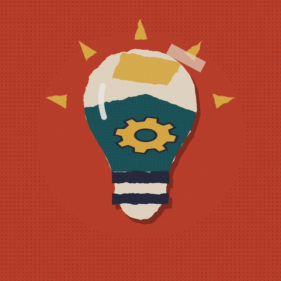

Wie kam das in die Welt?
Kanalisation, Kühlschrank, Konservendose: Hinter jedem Alltagsding steckt eine Geschichte voller Pannen, Zufälle und genialer Ideen. Wir erzählen sie in 80 Sekunden, als animierte Akte für alle von 12 bis 99.

80 SEK.Wie lebte man ohne die Erfindung? Meist: stinkiger, mühsamer, gefährlicher.
Irrtümer, kuriose Vorläufer, gescheiterte Tüftler. Erst dann kommt der Durchbruch.
Das Prinzip als animierter Querschnitt, verständlich in einem Bild.
Eine Zahl zum Staunen, ein überraschendes Ende und deine Frage für die nächste Akte.
Welches Alltagsding soll als Nächstes auf den Tisch? Schreib es unter ein Reel. Die meistgewünschten Themen bekommen ihre eigene Akte.